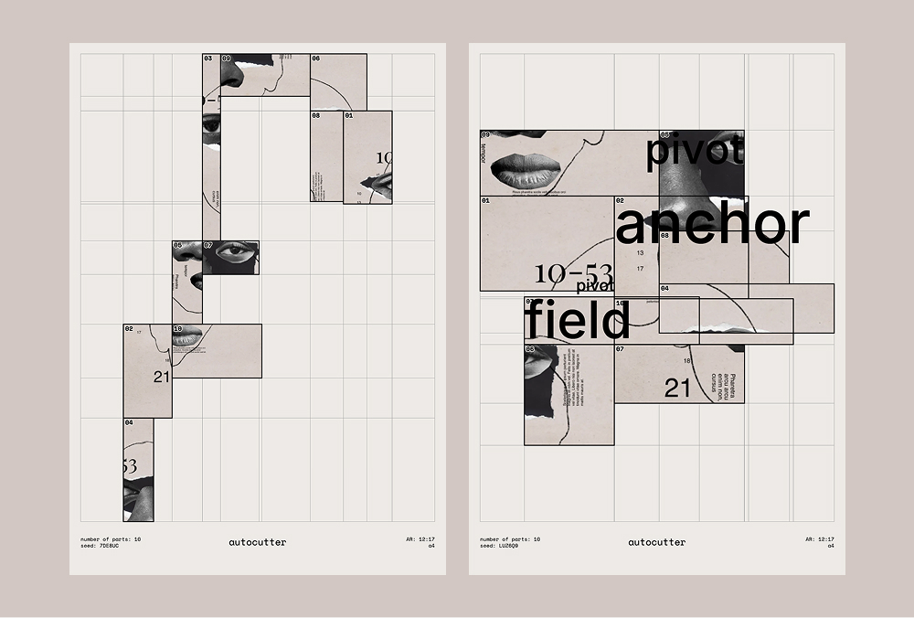
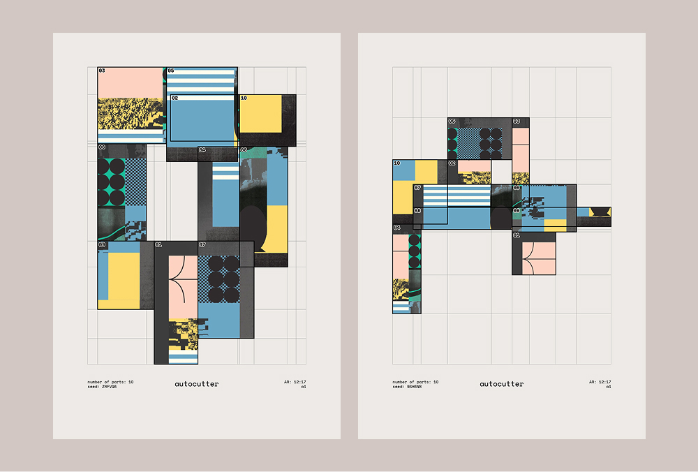
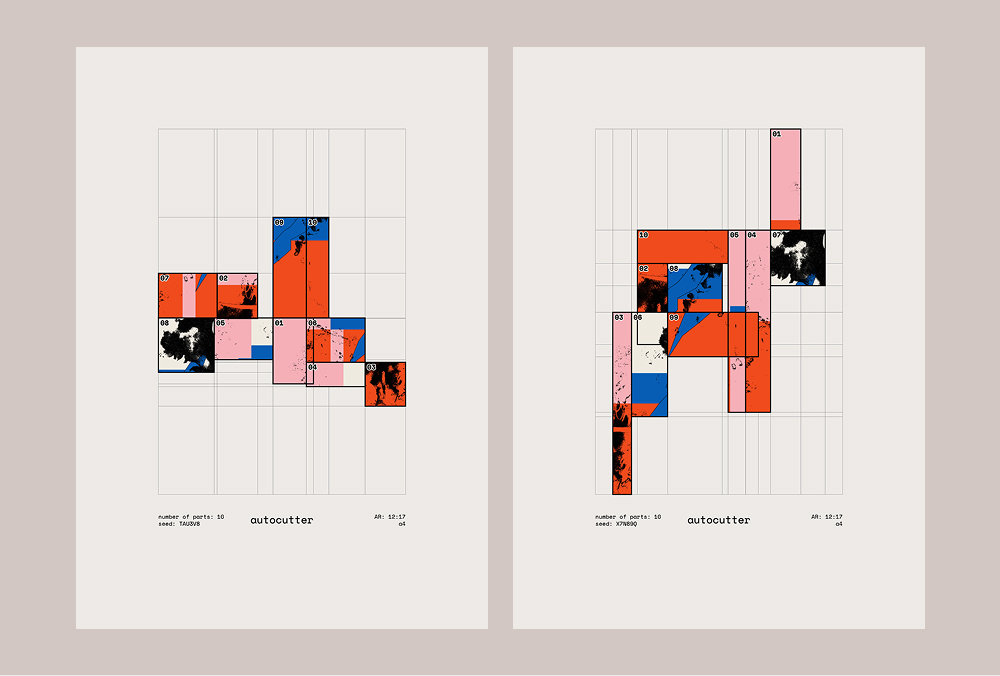
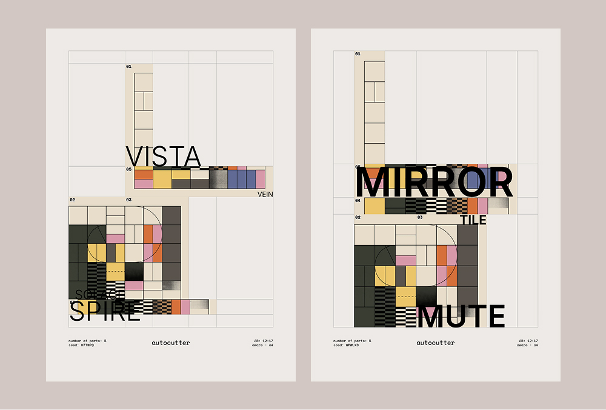

Autocutter
A small web tool for generating print compositions from images. Upload an image and Autocutter slices it into irregular pieces, then lays them out in a spiral on paper.
Tweak the number of cuts, aspect ratio (A4 / 4:5), padding and background. Add text on top, and apply effects — black & white, threshold, dither, posterize. Every result is bound to a seed, so you can save and share the exact composition you made.



